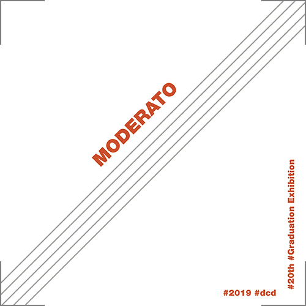

Web Design Studio Moderato
[졸업생들의 작품을 모두 볼 수 있는 웹페이지]
MODERATO_ 보통 빠르기로 우리는 더 나은 행복을 누리기 위해 쉴 틈 없 이 달리고, 그 속에서 스스로를 힘들게하기도 합니다. 행복을 위해 달리는 우리들은 느릴 수도, 빠를 수도 있습니다. 그 속도가 다르다고 잘못된 것 이 아니니 걱정하지 마세요. 지금 당신의 속도는 지금 너무 느리지도, 빠르 지도 않은 보통 빠르기입니다.
각자 자신에게 맞는 보통 빠르기
MODERATO_ 보통 빠르기로 우리는 더 나은 행복을 누리기 위해 쉴 틈 없 이 달리고, 그 속에서 스스로를 힘들게하기도 합니다. 행복을 위해 달리는 우리들은 느릴 수도, 빠를 수도 있습니다. 그 속도가 다르다고 잘못된 것 이 아니니 걱정하지 마세요. 지금 당신의 속도는 지금 너무 느리지도, 빠르 지도 않은 보통 빠르기입니다.
각자 자신에게 맞는 보통 빠르기
Interactive Media
똑똑톡
다세대 주택 또는 아파트에서 주로 발생하는 소음 공해를 뜻하는 말.
요즘 층간 소음으로 인한 사건, 사고, 범죄들이 많아지는 것을 보고 층간 소음으로 인해 직접 찾아가거나, 이웃의 소음으로 격해진 감정으로 인터폰이나 얼굴을 맞대고 불편함을 호소하는 것이 아닌, 앱을 통해 이웃의 상황을 알고, 해결 과정에서 서로의 감정을 상하지 않게 불편함을 전달. 아파트와 이웃 주민들 사이에서 층간 소음으로 인한 불편함, 불화들을 덜 수 있게 도와주는 앱인 똑똑톡을 기획하였다.

Multimedia Design Dance Script Tree
K-pop의 대표 곡인 방탄소년단의 DNA 곡 안무를 주제로하여 7명 멤버의 동선, 위치 이동을 코드로 나타내었고 DNA의 주요동작 12가지를 바탕으로 팔, 다리, 손, 발, 시선을 심볼로 나타내었다.
심볼을 통해 각 동작들을 알 수 있도록 Dance Script Tree로 시각화 해보았다.